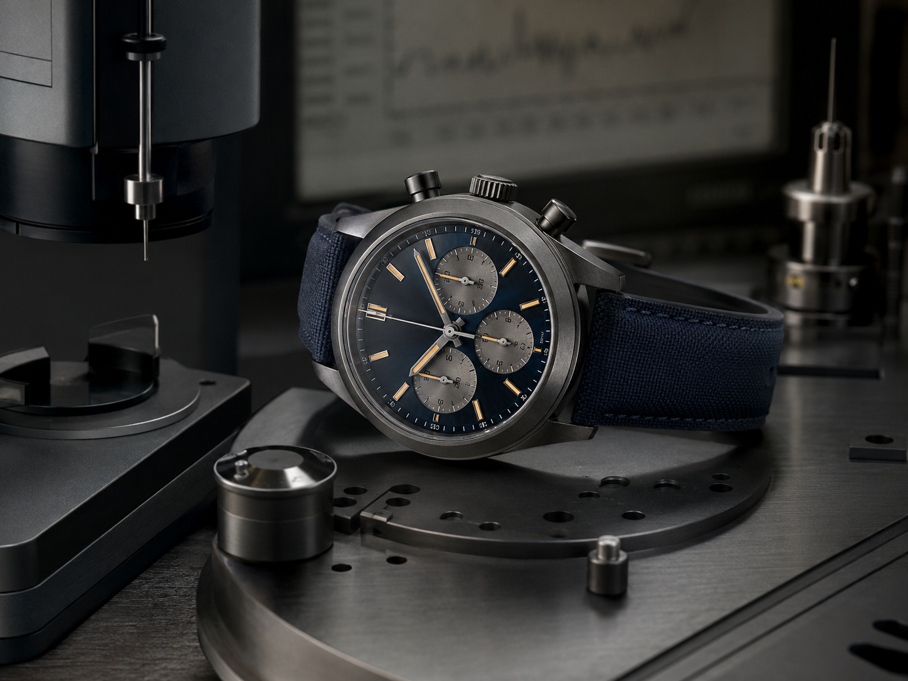

JOURNAL 09
How Dial Design Shapes Readability
Markers, hands, contrast and negative space—the quiet craft behind a useful dial.

Start with real use
A watch becomes easier to understand when we separate its visible style from the decisions beneath it. Case dimensions influence comfort, the dial controls how quickly information can be read, and the movement determines a rhythm of ownership. None of these elements is universally best. The useful question is how they work together for a particular wearer.
Begin with routine. Think about where the watch will be worn, how often it may meet water, whether it must slip beneath a cuff and how much attention you want to give winding or setting. A clear picture of daily use prevents technical specifications from becoming an abstract contest. It also makes comparison more honest.
Proportion deserves more attention than diameter alone. Lug-to-lug length affects whether a case sits within the wrist, while thickness changes balance and shirt-cuff comfort. Dial opening, bezel width and bracelet taper can make two watches with the same stated diameter feel completely different. Whenever possible, try a watch in natural light and view it from a normal distance.
Understand the trade-offs
Movement choice is partly practical and partly emotional. Automatic calibres use wrist motion to wind the mainspring; manual movements invite a short winding ritual. Quartz offers accuracy and convenience. Mechanical complexity can be fascinating, but it also brings future service requirements. Ownership costs should be considered alongside the purchase price.
Materials shape both character and maintenance. Stainless steel is familiar and resilient, titanium feels noticeably light, bronze develops a changing surface, and precious metals carry different visual and financial weight. Sapphire crystal resists scratches well, while acrylic can develop marks yet is often easy to polish. Each choice involves trade-offs rather than a simple ranking.
Condition and transparency matter greatly when buying pre-owned or vintage pieces. Ask for clear photographs, service history, timekeeping information and an explanation of replaced components. Originality may matter to collectors, but a sensitively serviced watch can be the better companion. The important point is knowing what you are buying and why.
Care and long-term value
Care is usually simple: avoid unnecessary shocks, rinse suitable water-resistant watches after salt exposure, keep leather away from prolonged moisture and store pieces in a dry place. Water-resistance seals age, so testing should be discussed with a watchmaker before swimming. Strong magnetic fields can also affect mechanical timekeeping.
A thoughtful decision does not need to be fast. Compare a short list, revisit it after several days and notice which qualities continue to matter. A watch that fits your life, feels comfortable and remains visually coherent will generally earn more wrist time than one selected only because it is currently prominent.
Finally, allow taste to develop. Early preferences often change as you experience different case shapes, dial layouts and straps. Learning is part of collecting, and restraint can make that process more enjoyable. The most satisfying collection is not necessarily large; it is one in which every watch has a clear reason to be worn.
This guide offers general educational information. For valuation, authentication or servicing, consult an appropriately qualified professional.